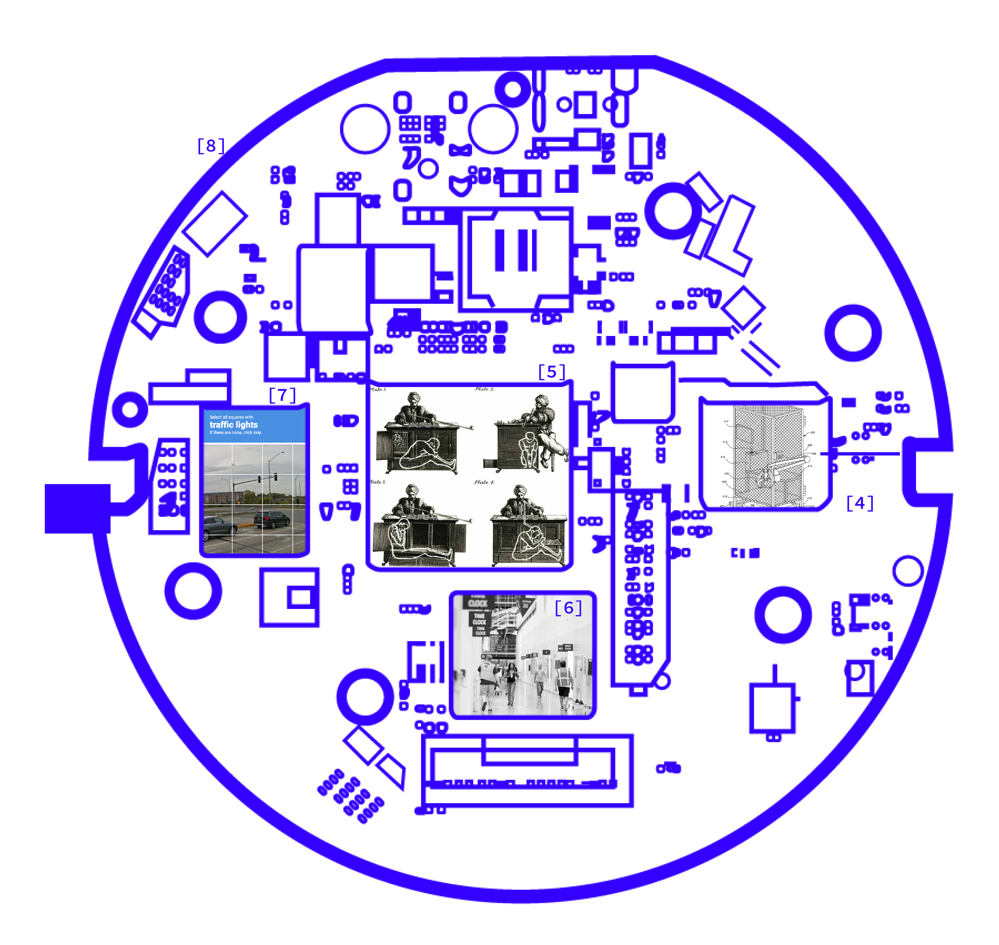

SILICON VALLEY HABBITS
“The problem is not that giant technology monopolies have disrupted habits, institutions, and norms in order to create new, unforeseen futures. The problem is that, in the name of “creative disruption,” they are amplifying and automating—rather than acknowledging and repairing—the mistakes of a discriminatory past.” [3]
LABOR
“…instead of asking whether robots will replace humans, I’m interested in how humans are increasingly treated like robots and what this means for the role of labor.” [1]
FAUXTOMATION
“Potemkin AI systems are a form of deception perpetrated by technology vendors eager to stake a claim in the lucrative tech space. But until there is another way to create large-scale AI that doesn’t use extensive behind-the-curtain work by humans , this is a core logic of how AI works.” [2]
WORK-TIME REGULATION
“Algorithmically determined time allocations will vary from extremely short shifts of an hour or less to very long ones during busy times—whatever is most profitable. The algorithm doesn’t factor in the human costs of waiting or getting to work only to be sent home or being unable to predict one’s schedule and plan one’s life. This time theft helps the efficiency of the company, but it comes at the direct cost of the employees.” [1]
GHOST WORK
“Sometimes this labor is entirely unpaid , as in the case of the Google’s reCAPTCHA. In a paradox that many of us have experienced, in order to prove that you are not artificial agent, you are forced to train Google’s image recognition AI system for free, by selecting multiple boxes that contain street numbers, or cars, or houses.” [1]
